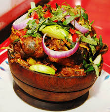

Ngwobi

What is Nkwobi..? It is a popular Southeastern delicacy from Nigeria. It's prepared with tender cow feet and a colorful, spicy soup base fragrant with African nutmeg, a.k.a ehuru.
It is usually served as a side dish on special occasions or as a main course in some Nigerian restaurants or “beer parlors.”
INGREDIENTS
- cow leg
- potash(akanu)
- palm oil
- onions
- fresh uziza leaf
- chill peppers
- Seasoning to taste!
- stockfish
- crayfish
PREPARATIONS
- First, thoroughly clean, then wash and boil the cow foot on medium to high heat. Add enough water to boil, then add the whole onion if you’re using any. Add the Knorr cubes and salt to taste. Boil till very soft, then discard the onion. To save time, you can use a pressure cooker for this.
- Add the stock fish into a medium size pot, add one Knorr cube and salt to taste and boil till tender. Alternatively, you can just chuck them into a microwaveable bowl, add water to cover and heat on high heat till tender. When it’s tender, shred into bite size chunks and set aside….
- Add the stock fish into a medium size pot, add one Knorr cube and salt to taste and boil till tender. Alternatively, you can just chuck them into a microwaveable bowl, add water to cover and heat on high heat till tender. When it’s tender, shred into bite size chunks and set aside….
- Add the scotch bonnet, crayfish and the ground Ehuru into a blender, blend till smooth…
- Place another pot on the hob on medium heat, or just transfer the boiled cow foot into another container and place the same pot back on the hob. Add the palm oil, then add Akawun mixture gradually, be careful not to add the particles/ residue and be careful not to add too much of the mixture, you’ll need the consistency to be thick and not fluid, stir till it thickens considerably. This is called the Ngo sauce…
- Now add the boiled cow leg, make sure the meat has cooled down first and isn’t piping hot….Add the shredded stock fish….
- Now, add the blended pepper and crayfish mix, pepper soup spice and mix thoroughly. Combine thoroughly and leave to cook for 3-5 minutes, and it’s ready….